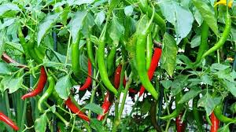
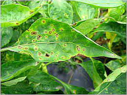

Crop Overview
Chilli, also known as chili or pepper, is a spicy fruit of plants from the genus Capsicum. It is widely used in various cuisines around the world to add heat and flavor to dishes.

Chilli peppers come in various shapes, sizes, colors, and levels of spiciness. They are a rich source of vitamins, especially vitamin C, and are known for their culinary versatility.
Cultivation Practices
Successful chilli cultivation requires attention to key practices to ensure optimal growth and spice production. Here are some cultivation tips:
- Planting: Start chilli seeds indoors and transplant seedlings when they are sturdy enough. Provide adequate spacing between plants.
- Sunlight: Chilli plants thrive in full sunlight. Ensure they receive at least 6-8 hours of direct sunlight daily.
- Watering: Maintain consistent moisture levels, avoiding both waterlogging and drought stress.
- Fertilization: Use a balanced fertilizer to promote healthy plant growth and fruit development.
Varieties
Chilli peppers come in a wide range of varieties, each with its unique characteristics. Some popular chilli varieties include:
- Jalapeño: A medium-sized, moderately spicy chilli often used in Mexican cuisine.
- Habanero: One of the hottest chillies, known for its intense heat and fruity flavor.
- Thai Bird's Eye: Small and extremely spicy, commonly used in Thai dishes.
- Bell Pepper: Mild and sweet, available in various colors, including red, yellow, and green.
Soil Requirements
Chilli plants prefer well-drained, fertile soil with a slightly acidic to neutral pH. Consider the following soil requirements for successful chilli cultivation:
- Soil Type: Use loamy or sandy soil with good drainage to prevent waterlogging.
- pH Level: Aim for a pH between 6.0 and 7.0 for optimal nutrient availability.
- Organic Matter: Incorporate compost or well-rotted manure to enhance soil fertility.
Pest and Disease Management
Chilli plants can face challenges from pests and diseases. Implement the following strategies to manage common issues:
- Aphids: Use insecticidal soap or neem oil to control aphids.
- Spider Mites: Increase humidity and use miticides to combat spider mite infestations.
- Fungal Diseases: Ensure good air circulation and avoid overwatering to prevent fungal diseases.

Harvesting and Storage
The timing of chilli harvest depends on the desired level of spiciness. Here are tips for harvesting and storing chillies:
- Harvest: Pick chillies when they reach the desired size and color. Use scissors or pruning shears to avoid damaging the plant.
- Storage: Store chillies in a cool, dry place or refrigerate for longer shelf life. Consider drying or freezing for preservation.
- Use: Fresh chillies add heat to various dishes, while dried or powdered chillies are excellent for spice blends and sauces.